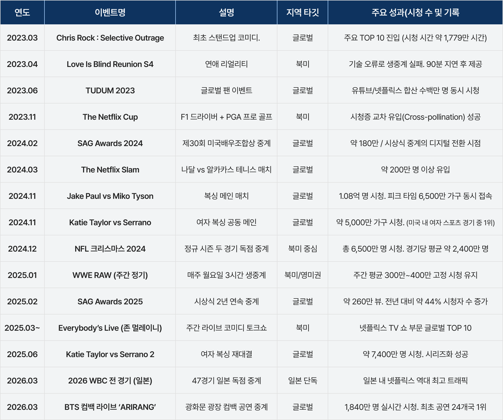
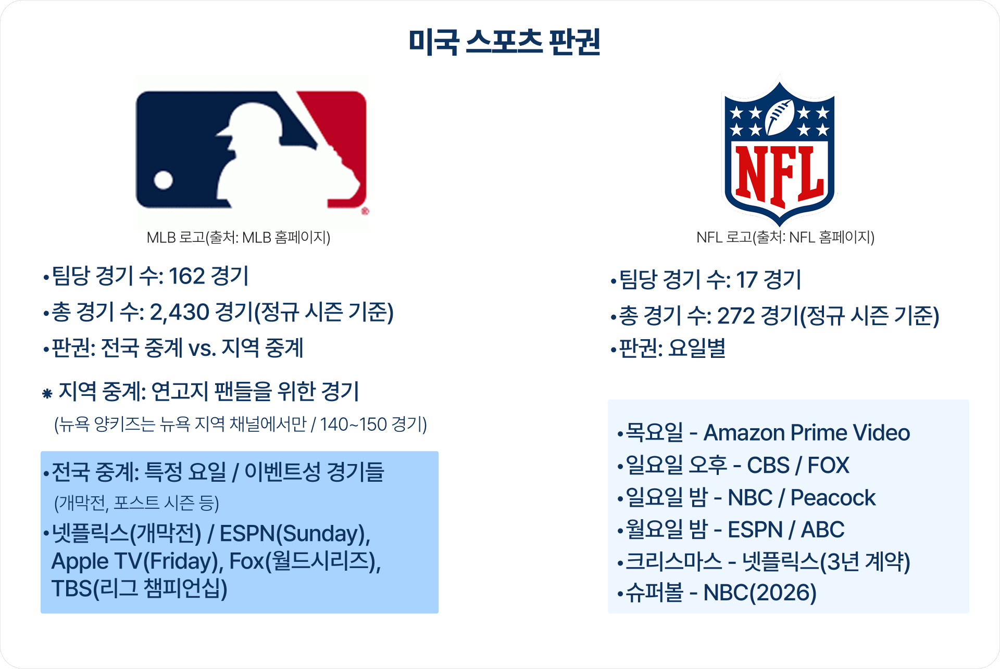

2026년 3월 21일, 서울 광화문 광장에서 열린 방탄소년단(BTS)의 컴백 라이브 'ARIRANG' 공연은 전 세계 미디어 산업의 판도를 뒤흔든, 그리고 라이브 스트리밍 역사에 있어 하나의 거대한 분기점으로 기록될 상징적인 사건이었다. 넷플릭스를 통해 전 세계로 동시 생중계된 이 공연은 이틀 동안 1,840만 명이라는 접속자를 끌어모으며, 넷플릭스 실시간 중계 역사상 4위에 랭크될 정도였다. 넷플릭스가 처음으로 라이브로 중계한 공연으로선 전례 없는 성과이다.
[그림 1] 넷플릭스 주요 생중계 프로그램
(출처: 저자 정리)
넷플릭스는 이번 실시간 공연을 위해서 만반의 준비를 했다. 과거 타이슨 경기 때처럼 지연 방송이 되거나, 화질이 열화되는 일이 없어야 했으며, 더더욱 미국 본토가 아닌 한국에서 벌어지고 송출되는 행사였던 만큼 기술적 오점을 남기지 않기 위한 조치를 취했다. 다이내믹하고 격렬한 아이돌의 댄스 동작과 시시각각 변하는 화려한 무대 조명 속에서도 화면이 뭉개지거나 화질이 저하되는 현상을 방지하기 위해, 넷플릭스는 최초로 가변 비트레이트(Variable Bitrate) 기술1)을 라이브에 전면 도입했다. 이에 더해 수천만 명의 동시 접속으로 인한 서버 다운과 지연(Latency)을 원천 차단하기 위해 3중 안전장치(Triple Layer Safety)를 구축하고, 라이브 트래픽을 최우선으로 안정적으로 처리하는 전용 라이브 모드(Dedicated Live Mode)와 분산 부하 분산(Distributed Load Balancing) 기술을 적용했다. 덕분에 전 세계의 넷플릭스 가입자들은 최고의 화질로 최고의 공연을 편안하게 모바일에서 혹은 TV에서 관람할 수 있었다.
결과적으로 넷플릭스 최초의 공연 라이브 중계는 기술적으로도, 상업적으로도, 그리고 BTS도 넷플릭스도 모두 만족할 만한 성취였다.
그러나 한국에서 일어난 넷플릭스 최초의 라이브 공연 실황을 목도한 이들의 입에선 다른 이야기가 나오기 시작했다. 이른바 라이브 쇼크다. VOD 서비스형 스트리밍 서비스가 사실상 시장을 주도하는 상황에서, 기존 사업자들이 버티고 있는 남은 영토인, 라이브마저도 이들에게 넘어가는 것은 아니냐는, 그래서 광고 시장이 넘어가는 것은 아니냐는 우려와 걱정이 슬금슬금 나왔다. 조금 과장되게 표현하면 광고 시장이 2019년 대비 반토막이 난 상황이고, 최고 정점을 기준으로 보면 ⅓ 수준까지 떨어진 상황이었기에 더더욱 온 몸에 소름이 돋을 수 있는 상황이긴 했다.2) 비록 광고 하나 실리지 않은 BTS 라이브 공연이었지만 말이다.
미래를 어떻게 예단할 수 있겠냐마는, 겉으로 드러난 현상이 아닌, 산업의 구조와 비즈니스의 본질을 한 꺼풀만 벗겨서 냉정하게 들여다보면 우려가 지나친 건 아닐까 하는 생각에 이른다.

<표 1> 넷플릭스 라이브 리스트
(출처: 저자 정리)
넷플릭스가 라이브 생중계를 본격적으로 시작한 이후 현재까지 진행해 온 포트폴리오를 면밀히 분석해 보면 뚜렷하고 일관된 전략적 패턴이 발견된다. 자사 팬 축제인 'TUDUM' 생중계부터 크리스 록의 스탠드업 코미디, 대규모 시청자를 모은 제이크 폴과 마이크 타이슨의 복싱 매치, 그리고 WWE 중계까지. 이들의 타깃은 철저하게 단일 이벤트로 전 세계 시청자를 동시에 모을 수 있는 '글로벌 빅 이벤트(Global Big Event)'이거나, 특정 국가나 로컬에서 열리더라도 전 세계 팬덤이 기꺼이 소비하는 '로컬의 글로벌 이벤트(Global Event in Local)'에 극도로 한정되어 있다는 점이다.
넷플릭스의 라이브 전략은 철저하게 전 세계 구독자를 대상으로 한 트래픽 극대화에 맞춰져 있다. 이 맥락에서 본다면 글로벌 스트리밍 사업자의 라이브 중계 행보는 국내 방송 사업자가 매일같이 영위하는 일상적인 편성이나 지역적 라이브 방송이라는 이른바 '밥거리'와 겹치지 않는다. 넷플릭스가 원하는 시장과 국내 방송사가 영위하는 시장은 본질적으로 전혀 다른 교집합이 없는 영역이기 때문이다. 그럼에도 ‘그건 어디까지나 과거였고, 기술적 완성도를 확보했으니, 이제는 일상이 되지 않겠냐는 주장’이 있을 수는 있다. 과연 그럴까? 그럼 하나씩 따져볼 수밖에.
먼저 라이브 공연부터 살펴보자. 비즈니스의 대원칙은 상호 간의 손익(P&L)이 철저하게 맞아야만 거래가 성립한다는 것이다. 넷플릭스가 글로벌 라이브 중계를 기획할 때 가장 탐내는 카드는 전 세계적인 거대 팬덤을 거느린 글로벌 톱 아티스트다. 그러나 이미 탄탄한 글로벌 팬덤을 구축하고 있는 아티스트들은 굳이 자신의 핵심 수익 모델을 포기하면서까지 넷플릭스에 라이브 생중계 권한을 넘겨줄 이유가 없다.
대형 아티스트들은 이미 위버스(Weverse), 비욘드 라이브(Beyond LIVE)와 같은 자체적인 팬덤 플랫폼을 통해 수십만 장의 디지털 티켓을 판매하거나, 전 세계 스타디움 투어를 통한 막대한 오프라인 티켓 판매, 그리고 관련 머천다이즈(MD) 수익 등 다각화되고 독립적인 수익 창출 구조를 확고히 쥐고 있다. 이 상황에서 넷플릭스로 공연을 생중계한다는 것은 곧 자신들의 지갑을 열 유료 관객을 넷플릭스의 무료 시청자로 돌려버리는 자기잠식(Cannibalization)을 의미한다.

[그림 2] BTS의 수익구조
(출처: 저자 정리)
BTS의 경우에도 전 세계에서 펼쳐지는 공연과는 별개로, 위버스를 통해 온라인 공연을 판매하고 있을 뿐만 아니라, 그 가격도 옵션에 따라서 13만 원에서 17만 원 선에서 제공되고 있다. 이런 상황에서 넷플릭스를 통해 라이브 공연을 정기적으로 제공할 리는 만무한 일이지 않을까? 이번 경우도 3년 6개월 만에 완전체로 전 세계 공연을 하기에 앞서서 한 시간가량 맛보기 프로모션 성격이었으니까 가능한 조합이었다고 봐야 하지 않을까? 이 셈법을 생각한다면, BTS와 같은 글로벌 아티스트의 독점 중계권을 넷플릭스는 간절히 원하겠지만, 정작 아티스트의 자체 수익 모델과 상충되기 때문에 성사되기 어렵다. 반면에 로컬에 머물러 있는 중소 규모의 아티스트는 글로벌 무대로의 인지도 확장과 해외 팬덤 유입을 위해 넷플릭스에 기꺼이 생중계를 할 의향이 있겠지만, 반대로 손익 계산에 따라 움직이는 넷플릭스 입장에서는, 글로벌 트래픽을 즉각적으로 담보할 수 없는 로컬 아티스트의 공연에 막대한 중계권료와 고품질의 라이브 제작비를 투입하여 전 세계 메인 화면에 띄울 실익이 전혀 없다. 결국 철저한 '동상이몽'의 딜레마에 빠지게 된다.
이러한 구조적 한계 때문에 스트리밍 플랫폼에서 실제로 성립 가능한 라이브 공연 중계의 숫자는 물리적으로 매우 제한적일 수밖에 없다. 없다는 것이 아니라, 아주 소수의 경우에 국한된다는 뜻이다.
더 나아가, 대형 아티스트의 단독 라이브 공연 실황 중계가 애초에 국내 레거시 방송사들이 주력으로 영위하며 큰돈을 벌던 수익 모델이었는가 생각해 보면 전혀 그렇지 않다. 방송사는 가요 프로그램 등을 제작할 뿐, 특정 세대를 대표하는 아티스트의 콘서트를 독점 중계한 적이 없다는 점 또한 기억하자. 나훈아 쇼와 조용필 쇼 정도가 최선이었던 방송사다. 그러니 애초에 빼앗길 시장 자체가 존재하지 않았다는 뜻이다. 이를 두고 방송사의 위기를 논하며 임팩트가 크다고 호들갑을 떠는 것은 상황을 심각하게 오독하는 것이지 않을까?
그럼 스포츠는 어떨까? 이런저런 상황에서 글로벌 사업자들이 스포츠 경기에 눈독을 들인다는 이야기는 공공연하게 나오고 있다. 조금만 검색해 보면 WBC의 넷플릭스 독점 중계 등을 이야기하면서 스포츠가 새로운 격전장이 되었다는 글들을 손쉽게 발견할 수 있다. 이미 OTT들이 북미의 주요 경기를 생중계하고 있으니, 이제 곧 한국의 스포츠도 그럴 것이라는 ‘분석 없는’ 주장이 흔하디 흔하다.
이때 등장하는 것이 미국의 MLB와 NFL 중계 사례다. 넷플릭스가 개막전을 했고, 넷플릭스가 NFL 크리스마스 중계권을 확보했다는 것 등이 예처럼 등장한다. 과연 그럴까?

[그림 3] 미국 시장에서의 스포츠 판권 구조
(출처: PWC(2020~2026). Sport Industry Outlook, 저자 정리)
미국의 스포츠 판권은 복잡하게 나눠져 있다. 미국 최대의 스포츠인 MLB의 경우, 전국 중계와 지역 중계로 명확히 구분된다. 예를 들어 양키즈 경기는 뉴욕의 지역 스포츠 네트워크가 중계권을 가지고 뉴욕 지역에 한해서 공급한다. 만약 뉴저지의 주민이 양키즈 경기를 보고 싶다면 지역 스포츠 네트워크에서 볼 수 없기 때문에 별도의 mlb.com에 가입해서 볼 수밖에 없는 구조다.
물론 MLB에서 특별히 전국 중계로 선별한 경기에 양키즈가 들어가 있을 순 있다. 예를 들어 양키즈와 다저스의 경기를 전국 중계로 정하고 중계할 경우엔 아쉽게도 로컬 스포츠 네트워크에서는 이 경기를 중계할 수가 없기 때문에 할 수 없이 시청자는 이 전국 중계권을 가지고 있는 사업자의 서비스를 통해서 볼 수밖에 없다. 과거 케이블 시대에는 이 역할을 대부분 ESPN 등이 해 왔다. 최근에는 전국 중계권도 스페셜 경기를 별도로 구분해서 중계권을 팔고 있다. 이를 두고 ESPN을 비롯한 OTT들이 각자 형편에 맞게 중계권을 구매했다. 넷플릭스도 개막전 중계권을 확보했을 뿐이다.
NFL은 MLB에 비해서 경기 횟수가 적고, 지역 수도 제한적이다. 그래서 NFL은 판권을 지역으로 구분하지 않고 요일로 구분한다. 월요일, 화요일 이런 식이다. 그리고 크리스마스와 같은 스페셜 경기를 두고 중계권을 팔고 있다. 일반 시청자가 NFL 모든 경기를 보려면 연간 1,500달러 정도를 지불해야 한다는 이야기가 나오는 것도 이 때문이다.3) 미국 시청자들이 제발 한곳에서 이 모든 경기를 볼 수 있었으면 좋겠다는 불평이 튀어나오고, 대부분의 포털 사업자들도 이 경기 리스트를 제대로 제공해 주면서 시청자를 유입하려고 하는 이유가 이런 중계권의 복잡성 때문이다.
이런 상황에서 소위 한 종목을 모두 제공할 수 있는 사업자는 존재하지 않는다. 결국 넷플릭스와 같은 사업자들은 이러한 거대한 스포츠 중계권 경쟁에서 완전히 도태되지 않기 위해, 그리고 자사의 광고 요금제에 값비싼 광고를 붙이기 위해 제한적인 권한을 확보하며 참전하고 있을 뿐이다. 더도 덜도 말고 딱 그만큼의 전략이다.
이에 비해서 우리는 방송권과 뉴미디어 중계권으로 구분되어 있는 단순한 구조다. 그렇기 때문에 역설적으로 미국보다 훨씬 손쉽게 OTT들이 중계권을 확보할 수 있는 것은 아니냐고 할지 모른다. 그러나 여기서 국내 방송 시장이 반드시 직시해야 할, 미국과 한국 스포츠 중계 시장 간의 결정적이고 근본적인 차이가 존재한다. 바로 중계 영상의 '제작(Production)' 주체다.
미국은 MLB나 NFL 사무국, 혹은 대형 네트워크가 경기의 촬영과 중계 영상 제작을 직접 전담한다. 넷플릭스나 아마존 같은 OTT 사업자들은 이미 완성된 고품질의 영상 피드(Feed)를 비용을 지불하고 수급하여 자사의 망을 통해 '송출(Streaming)'만 하면 되는 깔끔한 구조다. 생중계를 위해 카메라를 설치하고 중계차를 굴릴 필요가 없다.
반면, 한국의 프로야구(KBO 리그) 등 주요 스포츠 중계 생태계는 방송권과 뉴미디어권이 나누어져 거래되기는 하나, 전국 야구장에 매일같이 수십 대의 카메라와 수십 억 원짜리 중계차를 파견하고, 전문 캐스터와 인력을 투입하여 근본적인 중계 영상을 '제작'하는 주체는 오롯이 기존 '방송사'들이다. 현행 규정상 뉴미디어 사업자에게 중계 영상을 제공해야 한다는 조항은 있으나, 그 제작된 영상을 구체적으로 얼마의 가격에 넘겨야 하는지에 대해서는 명확한 규정이 없고, 당사자 간 거래 조건으로 남겨져 있다. 예를 들어 티빙은 사무국으로부터 중계권을 지불하고 별도로 각 방송사에 영상을 실비로 구매하는 형태다. 이것이 가능한 것은 티빙이나 네이버 등이 상대적으로 TV에서 시청하는 비율이 낮기 때문이다. 만약 TV에서 주로 시청하는 OTT들이 이 중계권을 구매할 경우, 방송사들이 요구할 영상 판매 대금이 어떨지 조금만 상상해 보면 이 일이 그리 손쉽게 결정될 수 있는 사안이 아니라는 것을 알 수 있다.
예를 들어 넷플릭스가 한국의 일상적인 프로 스포츠를 중계한다고 가정해 보자. 넷플릭스가 직접 중계차를 사고 촬영 인력을 꾸려 연간 수백 경기를 제작하는 것은 불가능에 가깝다. 그렇다면 방송사로부터 영상을 사 와야 하는데, 넷플릭스가 TV 시청 비율이 압도적으로 높고 자사의 글로벌 트래픽에는 전혀 기여하지 못하는 철저한 로컬 내수용 스포츠 경기를 거액을 들여 사 올 이익도 별로 없긴 하지만, 반대로 영상을 제공해야 하는 방송사 입장에서 낮은 가격으로 그 영상물을 넘길 이유도 없지 않겠는가? 결과적으로 라이브 중계가 기존 로컬 방송 시장에 영향을 미친다는 주장은 산업의 밸류체인에 대한 이해 부족에서 기인한 주장일 뿐이다. 양측은 철저히 서로 다른 시장을 바라보고 있다.
정리하면 그것이 라이브 공연이 되었던, 스포츠가 되었던 넷플릭스와 같은 글로벌 OTT 사업자들이 정기적이고 상시적으로 (적어도 한국에서) 진행할 개연성은 매우 낮다고 봐야 한다. 스포츠는 그 본질상 특정 지역과 연고지에 기반한 지극히 '로컬적인 이벤트'다. 따라서 전 세계 단일 릴리즈를 지향하는 넷플릭스의 기본 전략과는 태생적으로 상극이다. 불가능한 것은 아니겠지만, 확률적 가능성은 매우 낮다고 봐야 한다고 본다.
그렇다면 레거시 미디어가 직면한 진짜 위기의 본질은 무엇인가. 그것은 외부의 거대한 스트리밍 플랫폼이 라이브 중계를 시작해서가 아니라, 결국 방송사 스스로의 '경쟁력'이 완전히 사라져 버렸다는 뼈아픈 내부의 현실에 있다. 글로벌 플랫폼의 라이브 중계가 한국 시장에 어떠한 타격도 주지 않았던 시기에도, 한국의 방송 광고 시장은 이미 돌이킬 수 없는 붕괴 상태에 빠져 있었다.
실제 데이터가 이를 증명한다. 2023년 전체 방송 광고비는 전년 대비 15.7%라는 충격적인 하락세를 기록했고, 2024년에도 10.8%가 추가로 급감했다.4) 전 세계 주요 미디어 시장을 통틀어 거시경제적 충격 없이 이토록 단기간에 방송 광고 시장이 붕괴된 국가는 한국이 사실상 유일하다. 가장 중요한 팩트는, 이처럼 참혹한 구조적 붕괴가 일어나는 기간 동안 넷플릭스는 한국 시장을 타깃으로 단 한 번의 라이브 중계도 한 적이 없다는 점이다. 광고 수익의 증발은 라이브 중계의 부재가 아니라, 기존 방송 사업자의 콘텐츠가 시청자의 외면을 받았고, 유료방송이 제공하는 전반적인 서비스 및 가격 경쟁력이 처참하게 낮아졌기 때문에 발생한 결과다.
상황을 오독하여 잘못된 질문을 던지면, 필연적으로 잘못된 해법만을 모색하게 된다. 일부 호사가들이 이야기하는 것처럼 지금 "넷플릭스의 라이브 생중계를 어떻게 방어하고 규제할 것인가?"를 묻고 고민할 때가 아니다. 레거시가 잃어버린 것은 1년에 몇 번 열리는 이벤트 생중계가 아니라, 1년 365일 시청자들을 TV 앞에 앉혀두던 일상적인 매력이다.
따라서 전통 미디어 사업자들과 생태계 구성원들은 스스로의 체질을 묻는 가장 본원적이고 날카로운 질문부터 다시 던져야만 한다. "우리는 유료방송 서비스의 본원적인 경쟁력을 어떻게 다시 높일 것인가?" 이에 대한 대답이 단순히 광고 규제를 철폐하는 식이어서는 안된다. 여기서 말하는 경쟁력은 왜 사람들은 동일한 방송 프로그램을 유료방송에서 보지 않고, 굳이 넷플릭스 같은 곳에서 보냐는 질문에서 시작해야 한다.
단순한 방어 논리를 넘어, 요금제의 합리성, UI/UX의 혁신, VOD 상품의 매력도, 그리고 무엇보다 시청자의 시간을 점유할 수 있는 독보적인 오리지널 로컬 콘텐츠 제작 역량 등 유료방송 본연의 서비스 경쟁력을 어떻게 회복할 것인지 치열하게 고민해야 한다.
라이브 중계라는 허상의 적과 싸우며 에너지를 낭비할 시간이 없다. 올바른 해법은 언제나 제대로 된 질문에서부터 시작되는 법이다.